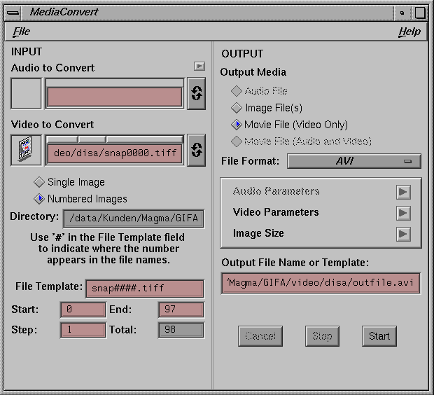

| Format of the snapshot files is .tiff (changed with Rel. 5.2.3). Creates an error dialog if offscreen rendering is not possible due to low colordepth. Offscreen rendering requires at least a 24bit true color. Same applies to Snap all. |
| Snap all can only be selected if the map contains timesteps, e. g. if an animated particle trace is generated. Format of snapshot files see Snap. |
You use this series of snapshots in order
to generate a simple movie.
Example on SGI: call 'mediaconvert' and fill in the entries as shown below
|  |